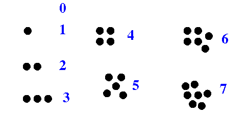
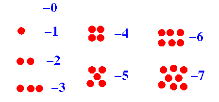

|  |
|  |
|
The mapping between the sign-magnitude representation and the signed values is as follows:
Sign-
magnitude 0
representation: ... -4 -3 -2 -1 -0 1 2 3 ...
---------------------------------------------
Value: •••• ••• •• • • •• •••
|
|
|
00000111 represents 7
10000111 represents -7
|
|
|